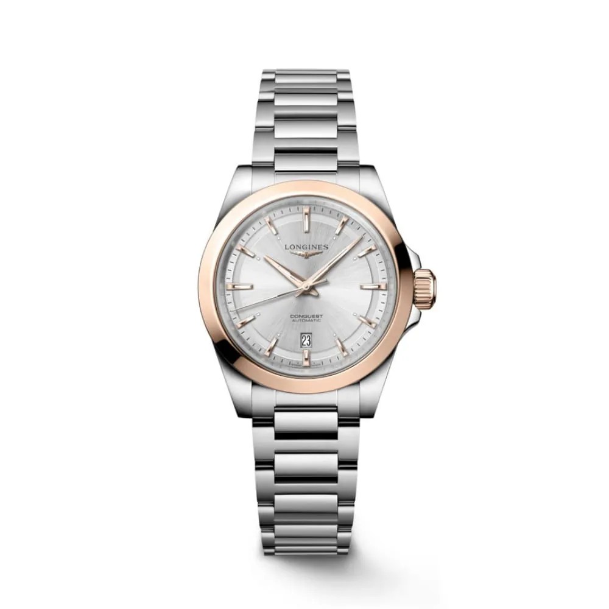
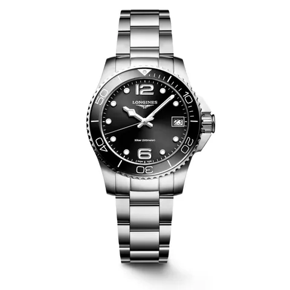

Longines
Longines Conquest Bicolor 30 mm
Ref. L33205726
Longines Conquest Bicolor 30mm
El Longines Conquest representa la fusión perfecta entre elegancia deportiva y diseño contemporáneo. Desde su protección por el Instituto Federal Suizo de la Propiedad Intelectual en 1954, esta emblemática colección ha evolucionado sin perder su esencia. Con líneas modernas, detalles atrevidos y una estética refinada, el Conquest sigue siendo el compañero ideal para el día a día. Cada pieza refleja el compromiso de LONGINES con la excelencia relojera, el rendimiento y la versatilidad. Disponible en múltiples tamaños, materiales y colores, es una colección pensada para adaptarse a cada estilo de vida.
- Movimiento
- Automático
- Diámetro de caja
- 30 mm
- Caja
- Acero, oro
- Brazalete
- Metalico
- Color de esfera
- Plateada
- Impermeabilidad
- 100 m
- Referencia
- L33205726
Precio y disponibilidad, en la joyería.Te lo confirmamos por WhatsApp o sentados en la mesa.
Para ver en la misma bandeja


